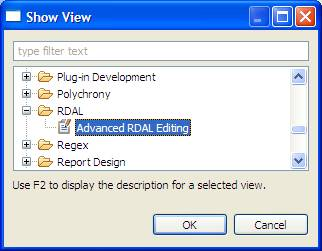
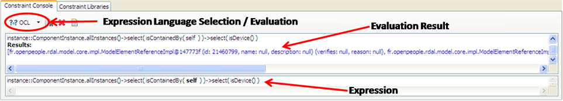
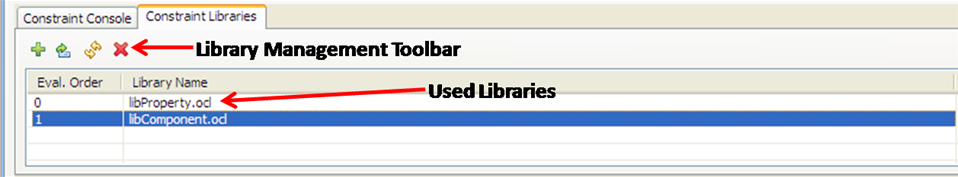
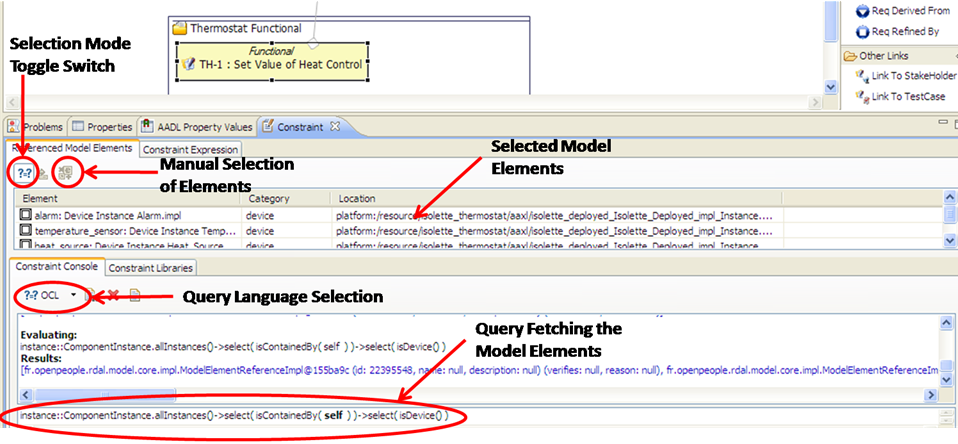
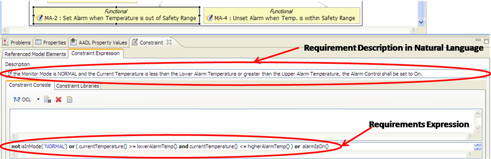

2.3 Using the Advanced RDAL Editing View
RDALTE includes an advanced editing view to ease the definition of complex requirements properties such as which model
elements from the design should be verified by a requirement, and the requirement's expression in natural or formal
language. This view can be shown by selecting the menu "Window / Show View". In the dialog box that appears, open the
"RDAL" folder and select "Advanced RDAL Editing" (Figure 14). This view makes use of a generic constraint console at several
places to define formal language queries on models. For example, a query that returns a boolean value can be used to
express a requirement. Usage of this generic console is introduced in the following section.

Figure 14: Showing the advanced RDAL editing view.
2.3.1 Using the Generic Constraint Console
A generic console panel is provided in the RDAL advanced editing view to help users define various natural or formal
language expressions. The console panel (Figure 15) contains two tabs. The first tab ("Constraint Console") is used to
enter an expression whose language is chosen from a combo box button. The tab has two text areas. The bottom one is
where users can enter the expression and the top one shows the result after the expression is evaluated by clicking
the combo box button.

Figure 15: The generic constraint console used in the RDAL advanced editing view.
Formal languages such as OCL may allow the use of libraries. The libraries used by the expression
of the console are set from the "Constraint Libraries" tab (Figure 16). To add / remove / edit the libraries, select
the concerned library elements in the table and click on the proper button in the tool bar. Note that by double-clicking the selected
library in the table, the file containing the library text is opened in the workbench. If a library needs to be modified,
its file must first be set writable. Library files are located under the "../eclipse/configuration/fr.openpeople.ide.settings/language_name"
directory in the Eclipse installation directory. However, because the library text is cached (for performance reasons), it
must be refreshed for the modifications to be taken into account. This is performed by clicking the "Refresh" button in the
tool bar.

Figure 16: Managing the constraint libraries to be used by the expression of the "Constraint Console".
New user defined library text files can be added into the set of libraries available to define expressions in the
"Constraint Console" panel. This is achieved by adding the library files under the "../fr.openpeople.ide.settings/language_name"
directory located under the Eclipse configuration directory. For example, to add an OCL library file, copy the file under the
"../eclipse/configuration/fr.openpeople.ide.settings/ocl" directory. Files placed under the sub-directory named "default" will
automatically be added to the used libraries when a new expression is created in the console. Do not forget to close all
requirements editors and restart the workbench for the added libraries to be available in the library choice.
2.3.2 Defining the Design Model Elements that Should Satisfy the Requirements
When a requirement is selected either from the diagram or object tree editor, the advanced editing view shows two
main tabs: one for selecting the referenced model elements (the components of the system architecture model that
should satisfy the requirements), and one for defining the expression (constraint) of the requirement (Figure 17).

Figure 17: Defining the components of the design that must satisfy the requirements.
The components of the design can be defined in two manners. The fist one is to select the elements directly from the
architecture models present in the workspace. This is performed by first making sure that the "Selection Mode Toggle
Switch" in the "Referenced Model Elements" tab (Figure 17) is not pushed. The elements can then be selected by clicking
the "Manual Selection of Elements" button and by choosing the model elements from the dialog box that pops up. The
second mode consists in defining a query, expressed in terms of a formal language, to retrieve the elements. This is
performed by making sure the "Selection Mode Toggle Button" is pushed in the "Referenced Model Elements" tab
(Figure 17). This has the effect of enabling the generic constraint console panel located bellow the table of
the referenced elements. Refer to section 2.3.1 for usage of this console. After execution of the query, the fetched
model elements are displayed in the upper table showing the referenced elements. Note that the execution context of
the query is taken as the system architecture specifications referenced by the "Specifies" property of the requirements
specification as explained is section 2.1.2.
2.3.3 Defining Requirements Expressions
The expression of a requirement is entered via the "Constraint Expression" tab (Figure 18). The tab embeds a text field
for entering the description of the requirement in natural language. It can be expressed formally with the help of
the generic constraint panel whose usage is presented in section 2.3.1.

Figure 18: Defining the expression of a requirement.
Back To Top